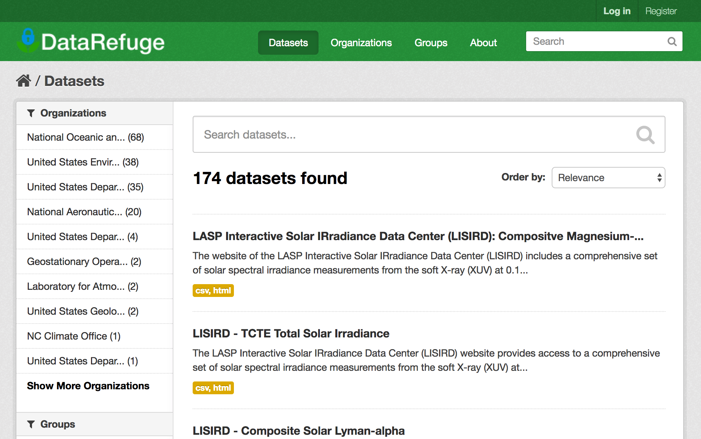

What is Endangered Data?
Jason A. Heppler, Ph.D.
@jaheppler
Digital Engagement Librarian
Assistant Professor of History
History
Government has been in the business of collecting data about the nation for 125 years. First, let's start with a bit of history. Before we can talk about endangered data, we should consider why government data exists at all.
data + visualization
A core reason is because of how governments use data for visualization.
Briefly...
So let's briefly go through some history of data and data visualization.
Data visualization is not new with the advent of the digital turn. For centuries people have trned to the visual display of information to create and disseminate knowledge. Seventeenth century visualization emerged as a way to aid navigation and exploration. As methods for precise measurements and observations were developed--geometry, measurement standardization, probability theory, demographic statistics--expanded how states studied their populations, land, taxes, and economies. We can, for example, look to Edmond Halley's meterological map that charts the direction of trade winds and monsoons. By the end of the seventeenth century, the methodologies of data visualization and presentation of information through graphical means had become common.
The eighteenth century witnessed the greatest expansion of graphical methods, part of the larger Enlightenment impulse to order, collect, and present information. Maps and charts became physical expressions of knowledge representation as data and thematic mapping became more common for understanding information. The work of Joseph Priestley is perhaps the most well known. His experiences with teaching and his wide reading of history led to important works including his 1788 Lectures on History and General Policy and his 1769 graphical folios A Chart of Biography and A New Chart of History. Priestley saw history as data, something that could be presented graphically. In his Chart of Biography (shown here), he charted two thousand famous names from 1200 BC to 1750 AD to represent the bith and death of individuals grouped together by statesmen, historians, orators, artists and poets, mathematicians, and divines.
Among the more prominent U.S. historians using charts was David Ramsay, a South Carolina doctor and member of the Continental Army. He published numerous works of hsitory, including his 1810 Historical and Biographical Chart of the United States. This remarkable work drew on several graphical traditions to argue for the growth of American colonies. He sought a dense representation of American history over time and space.
So by the dawn of the nineteenth century, innovations in design and technique fostered what is often called the "golden age" of data visualization that gave rise to many of the common graphical formats we're familiar with today (bar and pie charts, histograms, time-series plots, choropleth maps, contour plots, and scatterplots).
The expansion of graphical methods to represent data found purchase among bureaucrats. The U.S. Census Bureau under the direction of Francis Walker undertook one of the more innovative approaches to statistical representation. With his appointment to the Nineth Census, Walker devised a new set of questions and specific instructions for Census takers that made the 1870 Census the most detailed and accurate set of data collected at that point. And intrigued by ways to make the data meaningful, they turned to visualization to map Census data. When the Census Bureau issued their 1872 report, it included several maps representing populations.
data + visualization
Data and visualization haven closely related for quite some time. Walker even argued in 1872 that the graphical display of statistical information meant maps and charts stood without "verbal description and explanation, beyond what is given on their face."
data + visualization + computation
But it's important to note one added component to this, and that's the role of computation.
And again, the Census Bureau recognized how the growing rise of computation could be used in their work. The Eleventh Census of the United States in 1890 was historic. The Census Bureau completed millions of detailed questionnaires. It was the first Census where enumerators prepared separate schedules for each family to collect data about race, home ownership, ability to speak English, immigration, and naturalization; numbers of children; and questions relating to Civil War service. The enumerators returned some 63 million Census schedules.
IBM Hollerith
The first computer-driven Census
The 1890 Census returned more data than could be tabulated by humans, and as a result the Bureau needed a new way to process and tabulate data. Herman Hollerith, a former Census Bureau employee, developed the Hollerith Machine that dramatically shortened the time needed to tabulate Census data. Comprised of a pantograph (for creating punch cards), a card reader, tabulator dials, and a sorting table, experienced tabulator clerks could process 80 punchcards per minute.
The 1890 Census was a milestone in computation and data collection, but there's one problem.
Lost
The 1890 Census was lost.
A fire broke out in the basement of the Department of Commerce in 1896, destroying nearly all of the census schedules.
To make things worse, there was no back-up: counties were not required to keep copies of their schedules locally (as they had for the 10 prior censuses), which proved a costly mistake. Historians will never be able to examine the data that had led Frederick Jackson Turner to declare the western frontier closed, to trace Civil War veterans and widows, or study individuals that made up neighborhoods.
Scholars often use governemtn-produced data, including census records, housing and home loan records, and manufacturing and shipping records. These provide crucial information about the nation.
Destruction of data
It's not just a phenomenon of the digital age
There's lots of ways data can become endangered
There's lots of ways data can become endangered
Perhaps the biggest threat to data is budgets. The Sunlight Foundation has argued that "Congress [is] defunding agencies in a way that affects their ability to collect or maintain or disclose data." And look at the Trump Administration's budget proposal: agencies that study climate change has been slashed. The Commerce Department would lose $1.5 billion; the EPA budget would be cut by 30%; more than 3,200 federal workers would be out of a job.
And we've seen this before: our northern neighbors in Canada. In 2010, Stephen Harmer decided the country's census would be voluntary instead of mandatory: suddenly, important public health data was no longer being collected by the government. And localities don't have the resources to conduct their own surveys, and were left to work only with old data.
There's lots of ways data can become endangered
- Budgets
- Censorship & repression
Censorship and repression are perhaps the most obvious ways data is threatened. In mid-February, the Trump Administration scrubbed open.whitehouse.gov of datasets created under the Obama Administration: the National Archives and Records Administration made an archive available, but an estimate by the Sunlight Foundation suggests there's "low to moderate confidence" in the completeness of the NARA archive. The CIO and chief digital officer, created under the Obama administration, were meant to guide programs for collecting and opening data. But these positions remain unfilled. There's been only one confirmed case of the removal of data -- animal welfare records tracked by the USDA -- but other takedowns may not be far off.
There's lots of ways data can become endangered
- Budgets
- Censorship & repression
- Neglect
Perhaps less nefarious but just as important: simply the neglect of data. Sometimes this could be willfil neglect, in other ways it may simply be deemed unimportant to continue collecting or curating a set of data.
NASA, for example, overwrote magnetic tape footage of the Apollo 11 landing when reusing them to record satellite data. The loss of NASA data helped lead to the creation of the Open Archival Information System.
There's 18 minutes missing from the Nixon White House tapes, when Nixon's secretary Rose Woods accidentally pressed the record button instead of the pause button when she went to answer a phone call.
You can't even find old Dr. Who episodes as the BBC deleted old archives mostly for practical reasons (space, scarcity of material, lack of rebroadcast rights).
Spurred on by the Trump Administration's directives, but it's not unique to this moment.
The energy right now for events like DataRefuge have been in response to the new administration's policies around data, but it's not limited to this administration or any other.
Endangered data is often mundane.
Often, endangered data is mundane. There's a lot of interest in scraping websites for data or archiving entire websites, but there's plenty of link rot (websites that disappear out of neglect or moving locations). Data that's trapped inside of HTML tables or lists, accessible but perhaps not human readable or discoverable. We have to think about this data as well.
So, how do we help?
We can harness technology
 The Internet Archive is doing it's part to archive the web. With a Chrome plugin, the Internet Archive will point you to an archived page if you stumble into an error code (404, etc.) If there's no archived page, Internet Archive's plugin lets you "Save Page Now" and suggest a page for crawling and archiving.
The Internet Archive is doing it's part to archive the web. With a Chrome plugin, the Internet Archive will point you to an archived page if you stumble into an error code (404, etc.) If there's no archived page, Internet Archive's plugin lets you "Save Page Now" and suggest a page for crawling and archiving.
We don't have a DataRefuge planned this week, but you can host a DataRefuge event to archive climate data. Their efforts combine the work of "seeders, "baggers," "tool builders," "metadata," "and "storytellers and documentation," and the "long trail" to focused on collecting data, telling stories, and thinking about the long-term future of DR.

They're continuing the collection of data, so far having secured several hundred gigabytes of data.
We can be advocates for open governmental data
Senator Deb Fischer
@SenatorFischer
202-224-6551
Senator Ben Sasse
@SenSasse
202-224-4224
Representative Don Bacon
@repdonbacon
202-225-4155
advocacy
Environmental Data & Governance Initiative's Agency Primers
The Sunlight Foundation provides a guide for advocating for better governmental policies for data collection and curation. And the EDGI has primers on several agencies that are vulnerable to change and loss, which may be useful when contacting government officials and your representatives.
issues
Several issues are on the horizon: HR1305 that threatens to undercount minority populations in federal databases; S.2852 passed the Senate last year, but stalled in the House; S.103 and HR.482 would prohibit funding used "to design, build, maintain, utilize, or provide access to a Federal database of geospatial information on community racial disparities or disparities in access to affordable housing."
endangered data
Climate and Environmental Data Climate Mirror
As I mentioned, climate data is threatened by removal or underfunding, and budget cuts to HUD as well as S.103 and HR.482 threaten to undercut data collection that aid studies and policies around fair housing and residential segregation.
missing or uncollected data
People Killed by Police (no official data collection) Guardian's The Counting
And there's data that goes uncollected. Local law enforcement is not required to report hate crimes to federal law enforcement; and there's no national registry for officer-involved shootings or citizens killed by police.
other federal data
DataLumos US government and social science data
DataRefuge Climate and environmental data
Data.gov Other federal data
cultural heritage +
citizen science +
citizen archives +
libraries +
archives +
universities
We can tackle the issues around endangered data by collaborating with partners across a range of institutions.
❤ Data
And most importantly, love your data. If you are collecting research data, or are augmenting data you acquired from elsewhere -- make that publicly available, make it accessible, document it well. Put that data out there, on Github or Digital Commons or DataLumos. We're public employees at a publicly-funded institution: we have an obligation to give back.
fin
@jaheppler / @UNOLibraries